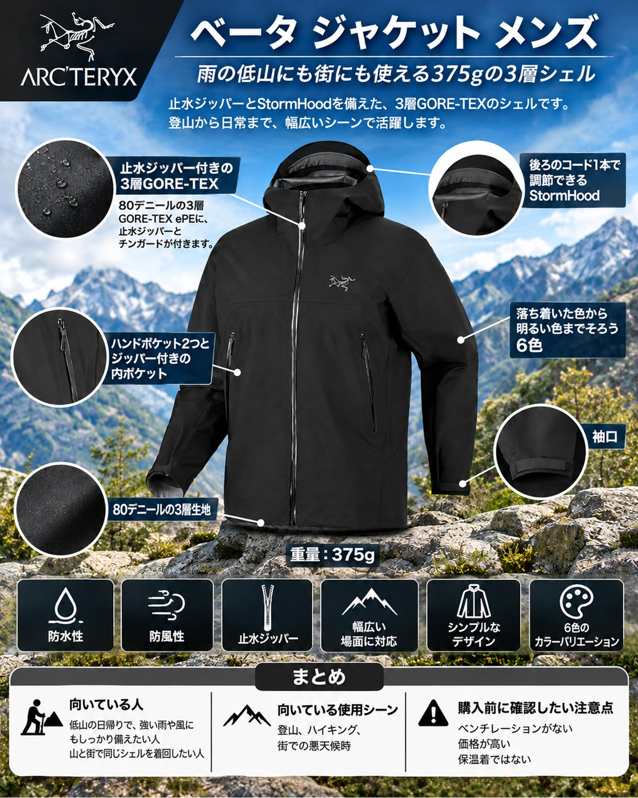

今週は24日に続き、28日（土）も広い範囲で雨の予報です。高い山は冬山シーズンに入り、登山の中心は低山に移っています。週末の山行では、冷たい雨と風から体を守るシェルを1枚用意しておきたいところです。
導入
今週は24日に続き、28日（土）も広い範囲で雨の予報です。高い山は冬山シーズンに入り、登山の中心は低山に移っています。週末の山行では、冷たい雨と風から体を守るシェルを1枚用意しておきたいところです。
今回紹介するのは、アークテリクスの「ベータ ジャケット メンズ」（モデル番号 X000010878）です。耐久性の高い多目的マウンテンシェルで、冬山向けの「ベータ AR ジャケット」と同じシリーズの基本モデルにあたります。今回は「低山の雨具と街のアウターを1着でまかなう」という視点で見ていきます。日帰りの低山が中心で、山でも街でも同じシェルを着たい人に向いています。
基本スペック
※仕様と価格は2026年11月26日時点のもの。在庫は色・サイズによって異なります。
| 項目 | 内容 |
|---|---|
| 商品名 | ベータ ジャケット メンズ |
| モデル番号 | X000010878 |
| 重量 | 375g |
| 表地 | 80デニール 3層GORE-TEX ePE |
| 裏地 | C-KNIT（ナイロン100%） |
| 撥水加工 | FC0 DWR |
| フィット | レギュラー |
| 着丈（背中心） | 約77cm（Mサイズ） |
| サイズ | XS〜XXL（XXLは一部カラーのみ） |
| カラー | Vitality、Sea Salt、Mongoose、Black Sapphire、Black、Spotlight |
| 価格 | 68,200円（税込） |
止水ジッパー付きの3層GORE-TEX
80デニールの3層GORE-TEX ePEに、止水ジッパーとチンガードが付きます。フロントのジッパーはWaterTight Vislonで、撥水加工はFC0 DWRです。冷たい雨が続く初冬の低山で、体を濡らさないための作りです。
後ろのコード1本で調節できるStormHood
フードは薄型のStormHoodで、後ろのコード1本で調節できます。雨の中でも片手で顔まわりのフィットを整えられます。
ハンドポケット2つとジッパー付きの内ポケット
ポケットはハンドポケット2つと、ジッパー付きの内ポケット1つです。裾はアジャスターで絞れ、立体構造のパターンで動きやすい作りです。
落ち着いた色から明るい色までそろう6色
形はシンプルで、色もBlackやBlack Sapphireのような落ち着いた色から、Vitalityのような明るい色までそろいます。暗い色ならジーンズやチノパン、ニットなど普段着の上に重ねやすく、雨の日の通勤や、天気が読めない旅行の羽織りものとして使えます。ただし冬の街では保温力が足りないので、ダウンやフリースを中に着る前提で考えましょう。
デメリット・注意点
- ベンチレーションがない：脇下のファスナーなどの換気機能はありません。汗をかく登りでは、前を開けたり中間着を減らしたりして調整が必要です。
- 価格が高い：税込68,200円で、購入のハードルは低くありません。
- 保温着ではない：薄いシェルなので、寒い日は保温着との重ね着が必要です。
- 雪山向けではない：冬の高い山を目指すなら、より頑丈なベータ AR ジャケットなどの冬山向けシェルを検討しましょう。
- 在庫に注意：一部の色やサイズが品切れの表示になっていました。
向いている人・向いていない人
◎向いている人
- 低山の日帰りで、強い雨や風にもしっかり備えたい人
- 山と街で同じシェルを着回したい人
- ザックのヒップベルトを締めたままポケットを使いたい人
△向いていない人
- 冬の高い山や雪山に行く人
- 汗をかきやすく、脇下の換気機能がほしい人
- 雨具は軽さと価格を最優先したい人
まとめ
アークテリクスの「ベータ ジャケット メンズ」は、80デニールの3層GORE-TEX ePEを使った375gのシェルです。止水ジッパーとStormHoodで雨に備える一方、ベンチレーションがないことと価格の高さは注意点です。シンプルな見た目で街でも着やすく、雨の多い初冬の低山と普段の通勤・旅行を1着でまかないたい人に向いています。28日の雨の前に、手持ちのシェルを見直してみてください。
この記事で紹介した商品
価格・重量・在庫は各ブランド公式サイトの記載（確認日つき）にもとづきます。商品を押すと、購入先を選べます。
この記事にはアフィリエイト広告が含まれます。リンク先での購入により、当サイトが報酬を受け取る場合があります。山行の前には、最新の気象とルートの状況を必ずご確認ください。